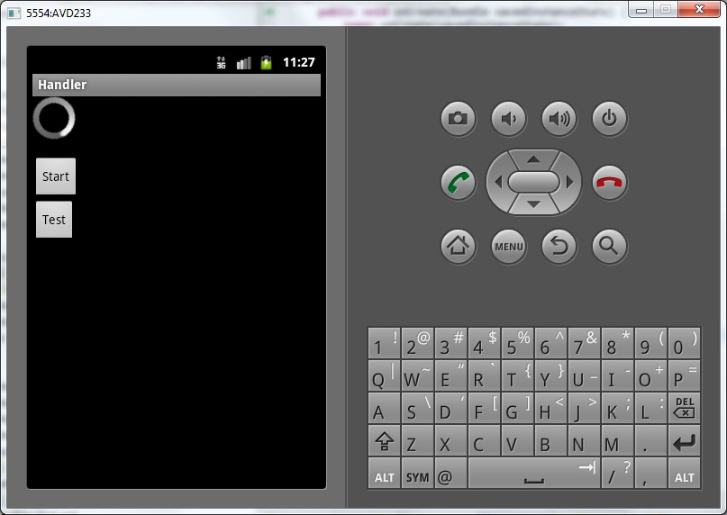
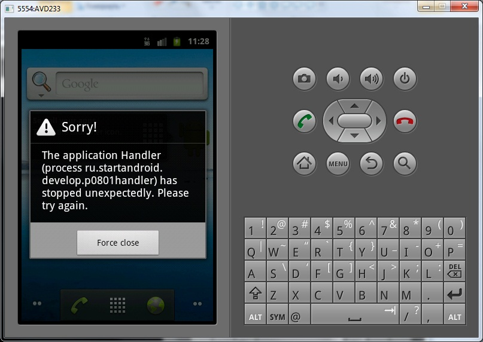
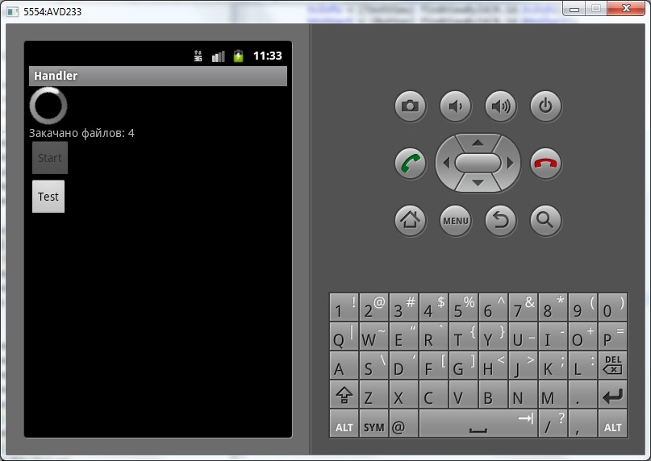
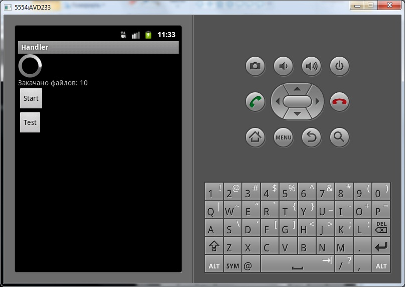

В этом уроке:
- разбираемся, что такое Handler и зачем он нужен
Для полного понимания урока желательно иметь представление о потоках (threads) в Java.
Так просто ведь и не объяснишь, что такое Handler. Можете попробовать почитать официальное описание, но там достаточно нетривиально и мало написано. Я попробую здесь в двух словах рассказать.
В Android к потоку (thread) может быть привязана очередь сообщений. Мы можем помещать туда сообщения, а система будет за очередью следить и отправлять сообщения на обработку. При этом мы можем указать, чтобы сообщение ушло на обработку не сразу, а спустя определенное кол-во времени.
Handler - это механизм, который позволяет работать с очередью сообщений. Он привязан к конкретному потоку (thread) и работает с его очередью. Handler умеет помещать сообщения в очередь. При этом он ставит самого себя в качестве получателя этого сообщения. И когда приходит время, система достает сообщение из очереди и отправляет его адресату (т.е. в Handler) на обработку.
Handler дает нам две интересные и полезные возможности:
1) реализовать отложенное по времени выполнение кода
2) выполнение кода не в своем потоке
Подозреваю, что стало не сильно понятнее, что такое Handler, а главное – зачем он вообще нужен :) . В ближайшие несколько уроков будем с этим разбираться, и все станет понятно.
В этом уроке сделаем небольшое приложение. Оно будет эмулировать какое-либо долгое действие, например закачку файлов и в TextView выводить кол-во закачанных файлов. С помощью этого примера мы увидим, зачем может быть нужен Handler.
Создадим проект:
Project name: P0801_Handler
Build Target: Android 4.0
Application name: Handler
Package name: ru.startandroid.develop.p0801handler
Create Activity: MainActivity
strings.xml:
<?xml version="1.0" encoding="utf-8"?>
<resources>
<string name="app_name">Handler</string>
<string name="start">Start</string>
<string name="test">Test</string>
</resources>main.xml:
<?xml version="1.0" encoding="utf-8"?>
<LinearLayout
xmlns:android="http://schemas.android.com/apk/res/android"
android:layout_width="fill_parent"
android:layout_height="fill_parent"
android:orientation="vertical">
<ProgressBar
android:layout_width="wrap_content"
android:layout_height="wrap_content"
android:indeterminate="true">
</ProgressBar>
<TextView
android:id="@+id/tvInfo"
android:layout_width="fill_parent"
android:layout_height="wrap_content"
android:text="">
</TextView>
<Button
android:id="@+id/btnStart"
android:layout_width="wrap_content"
android:layout_height="wrap_content"
android:onClick="onclick"
android:text="@string/start">
</Button>
<Button
android:id="@+id/btnTest"
android:layout_width="wrap_content"
android:layout_height="wrap_content"
android:onClick="onclick"
android:text="@string/test">
</Button>
</LinearLayout>ProgressBar у нас будет крутиться всегда. Позже станет понятно, зачем. TextView – для вывода информации о закачке файлов. Кнопка Start будет стартовать закачку. Кнопка Test будет просто выводить в лог слово test.
Кодим MainActivity.java:
package ru.startandroid.develop.p0801handler;
import java.util.concurrent.TimeUnit;
import android.app.Activity;
import android.os.Bundle;
import android.os.Handler;
import android.util.Log;
import android.view.View;
import android.widget.Button;
import android.widget.TextView;
public class MainActivity extends Activity {
final String LOG_TAG = "myLogs";
Handler h;
TextView tvInfo;
Button btnStart;
/** Called when the activity is first created. */
public void onCreate(Bundle savedInstanceState) {
super.onCreate(savedInstanceState);
setContentView(R.layout.main);
tvInfo = (TextView) findViewById(R.id.tvInfo);
}
public void onclick(View v) {
switch (v.getId()) {
case R.id.btnStart:
for (int i = 1; i <= 10; i++) {
// долгий процесс
downloadFile();
// обновляем TextView
tvInfo.setText("Закачано файлов: " + i);
// пишем лог
Log.d(LOG_TAG, "Закачано файлов: " + i);
}
break;
case R.id.btnTest:
Log.d(LOG_TAG, "test");
break;
default:
break;
}
}
void downloadFile() {
// пауза - 1 секунда
try {
TimeUnit.SECONDS.sleep(1);
} catch (InterruptedException e) {
e.printStackTrace();
}
}
}В обработчике кнопки Start мы организуем цикл для закачки файлов. В каждой итерации цикла выполняем метод downloadFile (который эмулирует закачку файла), обновляем TextView и пишем в лог информацию о том, что кол-во закачанных файлов изменилось. Итого у нас должны закачаться 10 файлов и после закачки каждого из них лог и экран должны показывать, сколько файлов уже закачано.
По нажатию кнопки Test – просто выводим в лог сообщение.
downloadFile – эмулирует закачку файла, это просто пауза в одну секунду.
Все сохраним и запустим приложение.

Мы видим, что ProgressBar крутится. Понажимаем на кнопку Test, в логах появляется test. Все в порядке, приложение отзывается на наши действия.
Теперь расположите AVD на экране монитора так, чтобы он не перекрывал вкладку логов в Eclipse (LogCat). Нам надо будет видеть их одновременно.
Если мы нажмем кнопку Start, то мы должны наблюдать, как обновляется TextView и пишется лог после закачки очередного файла. Но на деле будет немного не так. Наше приложение просто «зависнет» и перестанет реагировать на нажатия. Остановится ProgressBar, не будет обновляться TextView, и не будет нажиматься кнопка Test. Т.е. UI (экран) для нас станет недоступным. И только по логам будет понятно, что приложение на самом деле работает и файлы закачиваются. Нажмите Start и убедитесь.
Экран «висит», а логи идут. Как только все 10 файлов будут закачаны, приложение оживет и снова станет реагировать на ваши нажатия.
А все почему? Потому что работа экрана обеспечивается основным потоком приложения. А мы заняли весь этот основной поток под свои нужды. В нашем случае, как будто под закачку файлов. И как только мы закончили закачивать файлы – поток освободился, и экран стал снова обновляться и реагировать на нажатия.
Для тех, кто имеет опыт кодинга на Java, я ничего нового не открыл. Для остальных же, надеюсь, у меня получилось доступно объяснить. Тут надо понять одну вещь - основной поток приложения отвечает за экран. Этот поток ни в коем случае нельзя грузить чем-то тяжелым – экран просто перестает обновляться и реагировать на нажатия. Если у вас есть долгоиграющие задачи – их надо вынести в отдельный поток. Попробуем это сделать.
Перепишем onclick:
public void onclick(View v) {
switch (v.getId()) {
case R.id.btnStart:
Thread t = new Thread(new Runnable() {
public void run() {
for (int i = 1; i <= 10; i++) {
// долгий процесс
downloadFile();
// обновляем TextView
tvInfo.setText("Закачано файлов: " + i);
// пишем лог
Log.d(LOG_TAG, "i = " + i);
}
}
});
t.start();
break;
case R.id.btnTest:
Log.d(LOG_TAG, "test");
break;
default:
break;
}
}Т.е. мы просто помещаем весь цикл в новый поток и запускаем его. Теперь закачка файлов пойдет в этом новом потоке. А основной поток будет не занят и сможет без проблем прорисовывать экран и реагировать на нажатия. А значит, мы будем видеть изменение TextView после каждого закачанного файла и крутящийся ProgressBar. И, вообще, сможем полноценно взаимодействовать с приложением. Казалось бы, вот оно счастье :)
Все сохраним и запустим приложение. Жмем Start.

Приложение вылетело с ошибкой. Смотрим лог ошибок в LogCat. Там есть строки:
android.view.ViewRoot$CalledFromWrongThreadException: Only the original thread that created a view hierarchy can touch its views.
и
at ru.startandroid.develop.p0801handler.MainActivity$1.run(MainActivity.java:37)
Смотрим, что за код у нас в MainActivity.java в 37-й строке:
tvInfo.setText("Закачано файлов: " + i);При попытке выполнить этот код (не в основном потоке) мы получили ошибку «Only the original thread that created a view hierarchy can touch its views». Если по-русски, то «Только оригинальный поток, создавший view-компоненты, может взаимодействовать с ними». Т.е. работа с view-компонентами доступна только из основного потока. А новые потоки, которые мы создаем, не имеют доступа к элементам экрана.
Т.е. с одной стороны нельзя загружать основной поток тяжелыми задачами, чтобы не «вешался» экран. С другой стороны – новые потоки, созданные для выполнения тяжелых задач, не имеют доступа к экрану, и мы не сможем из них показать пользователю, что наша тяжелая задача как-то движется.
Тут нам поможет Handler. План такой:
- мы создаем в основном потоке Handler
- в потоке закачки файлов обращаемся к Handler и с его помощью помещаем в очередь сообщение для него же самого
- система берет это сообщение, видит, что адресат – Handler, и отправляет сообщение на обработку в Handler
- Handler, получив сообщение, обновит TextView
Чем это отличается от нашей предыдущей попытки обновить TextView из другого потока? Тем, что Handler был создан в основном потоке, и обрабатывать поступающие ему сообщения он будет в основном потоке, а значит, будет иметь доступ к экранным компонентам и сможет поменять текст в TextView. Получить доступ к Handler из какого-либо другого потока мы сможем без проблем, т.к. основной поток монополизирует только доступ к UI. А элементы классов (в нашем случае это Handler в MainActivity.java) доступны в любых потоках. Таким образом Handler выступит в качестве «моста» между потоками.
Перепишем метод onCreate:
public void onCreate(Bundle savedInstanceState) {
super.onCreate(savedInstanceState);
setContentView(R.layout.main);
tvInfo = (TextView) findViewById(R.id.tvInfo);
btnStart = (Button) findViewById(R.id.btnStart);
h = new Handler() {
public void handleMessage(android.os.Message msg) {
// обновляем TextView
tvInfo.setText("Закачано файлов: " + msg.what);
if (msg.what == 10) btnStart.setEnabled(true);
};
};
}Здесь мы создаем Handler и в нем реализуем метод обработки сообщений handleMessage. Мы извлекаем из сообщения атрибут what – это кол-во закачанных файлов. Если оно равно 10, т.е. все файлы закачаны, мы активируем кнопку Start. (кол-во закачанных файлов мы сами кладем в сообщение - сейчас увидите, как)
Метод onclick перепишем так:
public void onclick(View v) {
switch (v.getId()) {
case R.id.btnStart:
btnStart.setEnabled(false);
Thread t = new Thread(new Runnable() {
public void run() {
for (int i = 1; i <= 10; i++) {
// долгий процесс
downloadFile();
h.sendEmptyMessage(i);
// пишем лог
Log.d(LOG_TAG, "i = " + i);
}
}
});
t.start();
break;
case R.id.btnTest:
Log.d(LOG_TAG, "test");
break;
default:
break;
}
}Мы деактивируем кнопку Start перед запуском закачки файлов. Это просто защита, чтобы нельзя было запустить несколько закачек одновременно. А в процессе закачки, после каждого закачанного файла, отправляем (sendEmptyMessage) для Handler сообщение с кол-вом уже закачанных файлов. Handler это сообщение примет, извлечет из него кол-во файлов и обновит TextView.
Все сохраняем и запускаем приложение. Жмем кнопку Start.

Кнопка Start стала неактивной, т.к. мы ее сами выключили. А TextView обновляется, ProgressBar крутится и кнопка Test нажимается. Т.е. и закачка файлов идет, и приложение продолжает работать без проблем, отображая статус закачки.
Когда все файлы закачаются, кнопка Start снова станет активной.

Подытожим все вышесказанное.
1) Сначала мы попытались грузить приложение тяжелой задачей в основном потоке. Это привело к тому, что мы потеряли экран – он перестал обновляться и отвечать на нажатия. Случилось это потому, что за экран отвечает основной поток приложения, а он был сильно загружен.
2) Мы создали отдельный поток и выполнили весь тяжелый код там. И это бы сработало, но нам надо было обновлять экран в процессе работы. А из не основного потока доступа к экрану нет. Экран доступен только из основного потока.
3) Мы создали Handler в основном потоке. А из нового потока отправляли для Handler сообщения, чтобы он нам обновлял экран. В итоге Handler помог нам обновлять экран не из основного потока.
Достаточно сложный урок получился. Наверняка, мало, что понятно. Не волнуйтесь, в этом уроке я просто показал, в какой ситуации Handler может быть полезен. А методы работы с ним мы рассмотрим подробно в следующих уроках.
Eclipse может подчеркивать Handler желтым цветом и ругаться примерно такими словами: "This Handler class should be static or leaks might occur". Тем самым он сообщает нам, что наш код немного плох и может вызвать утечку памяти. Тут он прав абсолютно, но я в своих уроках все-таки буду придерживаться этой схемы, чтобы не усложнять.
А на форуме я отдельно расписал, почему может возникнуть утечка и как это можно пофиксить. Как закончите тему Handler-ов, обязательно загляните туда и почитайте - http://forum.startandroid.ru/viewtopic.php?f=30&t=1870.